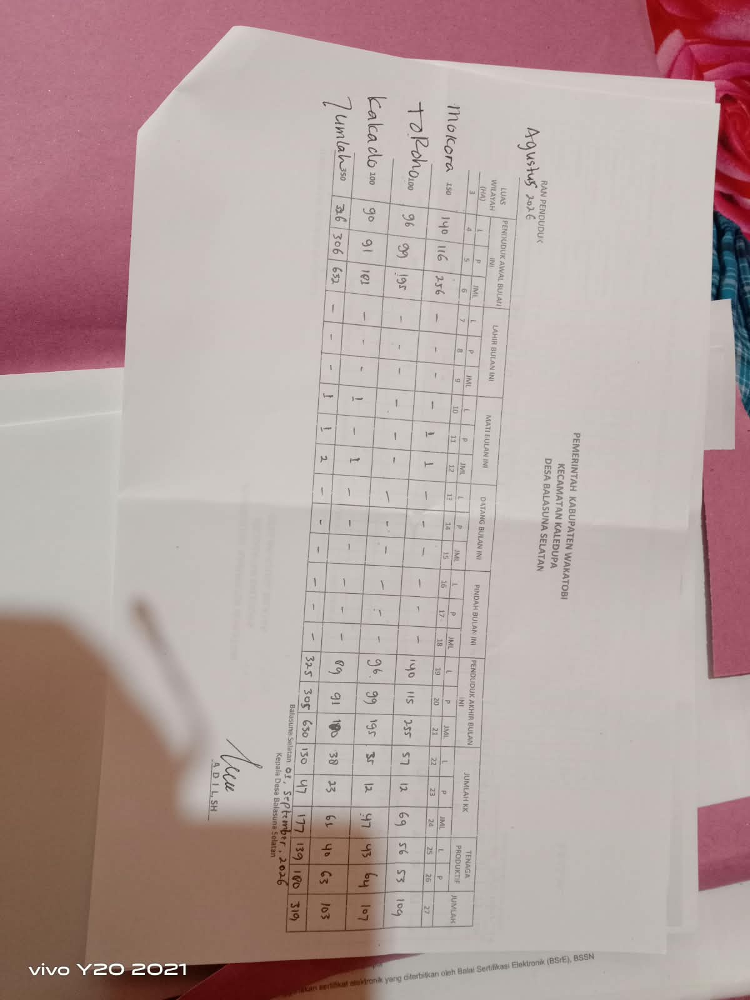

Kependudukan
Demografi Penduduk Desa
630 jiwa dalam 177 kepala keluarga tersebar di tiga dusun — data Agustus 2026 beserta komposisi usia, pendidikan dan kepadatan penduduk.
630 jiwa dalam 177 kepala keluarga tersebar di tiga dusun — data Agustus 2026 beserta komposisi usia, pendidikan dan kepadatan penduduk.
Data kependudukan diperbarui melalui pendataan SDGs desa (2022) dan Bagan Penduduk Agustus 2026.
Sumber: Pendataan SDGs Desa Balasuna Selatan, 2022
Sumber: Pendataan SDGs Desa Balasuna Selatan, 2022
Sumber: Pendataan SDGs Desa Balasuna Selatan, 2022
Warga usia produktif (15–50 tahun) berjumlah 392 orang: 62 tamatan perguruan tinggi, 158 SMA serta 140 tamatan SD dan SMP.
Sumber: Pendataan SDGs Desa Balasuna Selatan, 2022
| Wilayah | Luas (Ha) | Awal L | Awal P | Awal Jml | Akhir L | Akhir P | Akhir Jml | KK | Ten. Prod. |
|---|---|---|---|---|---|---|---|---|---|
| Dusun Mokora | 150 | 140 | 116 | 256 | 140 | 115 | 255 | 69 | 109 |
| Dusun Toroho | 100 | 96 | 99 | 195 | 96 | 99 | 195 | 47 | 107 |
| Dusun Kakado | 100 | 90 | 91 | 181 | 89 | 91 | 180 | 61 | 103 |
| Jumlah | 350 | 326 | 306 | 632 | 325 | 305 | 630 | 177 | 319 |
Bagan Penduduk Desa, ditandatangani Kepala Desa Adil, SH — 01 September 2026
